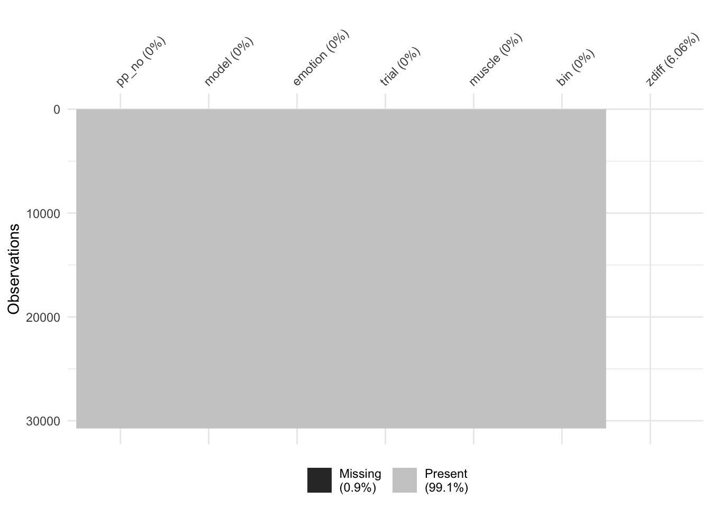

Last updated: 2020-09-16
Checks: 6 1
Knit directory: RILEY_Hons/
This reproducible R Markdown analysis was created with workflowr (version 1.6.2). The Checks tab describes the reproducibility checks that were applied when the results were created. The Past versions tab lists the development history.
The R Markdown file has unstaged changes. To know which version of the R Markdown file created these results, you’ll want to first commit it to the Git repo. If you’re still working on the analysis, you can ignore this warning. When you’re finished, you can run wflow_publish to commit the R Markdown file and build the HTML.
Great job! The global environment was empty. Objects defined in the global environment can affect the analysis in your R Markdown file in unknown ways. For reproduciblity it’s best to always run the code in an empty environment.
The command set.seed(20200903) was run prior to running the code in the R Markdown file. Setting a seed ensures that any results that rely on randomness, e.g. subsampling or permutations, are reproducible.
Great job! Recording the operating system, R version, and package versions is critical for reproducibility.
Nice! There were no cached chunks for this analysis, so you can be confident that you successfully produced the results during this run.
Great job! Using relative paths to the files within your workflowr project makes it easier to run your code on other machines.
Great! You are using Git for version control. Tracking code development and connecting the code version to the results is critical for reproducibility.
The results in this page were generated with repository version 6a11da0. See the Past versions tab to see a history of the changes made to the R Markdown and HTML files.
Note that you need to be careful to ensure that all relevant files for the analysis have been committed to Git prior to generating the results (you can use wflow_publish or wflow_git_commit). workflowr only checks the R Markdown file, but you know if there are other scripts or data files that it depends on. Below is the status of the Git repository when the results were generated:
Ignored files:
Ignored: .Rhistory
Ignored: .Rproj.user/
Ignored: analysis/child_bar_plot.png
Ignored: analysis/child_cheek_plot.png
Ignored: analysis/child_cheekbin_plot.png
Untracked files:
Untracked: analysis/test_zscore.Rmd
Unstaged changes:
Modified: analysis/5_calculating_zscores.Rmd
Modified: analysis/6_bin_outliers.Rmd
Staged changes:
Modified: README2
Modified: analysis/10_brow_analysis.Rmd
Modified: analysis/13_adult_child_analysis.Rmd
Modified: analysis/9_cheek_analysis.Rmd
Modified: analysis/all_emo_adult_analysis.Rmd
Modified: analysis/all_emo_child_analysis.Rmd
Modified: analysis/all_emo_plotting.Rmd
Modified: analysis/index.Rmd
Note that any generated files, e.g. HTML, png, CSS, etc., are not included in this status report because it is ok for generated content to have uncommitted changes.
These are the previous versions of the repository in which changes were made to the R Markdown (analysis/5_calculating_zscores.Rmd) and HTML (docs/5_calculating_zscores.html) files. If you’ve configured a remote Git repository (see ?wflow_git_remote), click on the hyperlinks in the table below to view the files as they were in that past version.
| File | Version | Author | Date | Message |
|---|---|---|---|---|
| Rmd | 75150a3 | RileyFerguson | 2020-09-14 | riley updating |
| html | 75150a3 | RileyFerguson | 2020-09-14 | riley updating |
| html | 49c2d7c | Your Name | 2020-09-04 | Build site. |
| html | 519b199 | Your Name | 2020-09-04 | Build site. |
| Rmd | 47a7872 | Your Name | 2020-09-04 | publish analysis files |
library(tidyverse)
library(here)
library(skimr)
library(naniar)data <- read_csv(here::here("data", "adult_child_combined", "clean_no_bl_outliers.csv"))pp401 <- data %>%
filter(pp_no == "pp401")
#make it wide
widepp401 <- pp401 %>%
pivot_wider(names_from = muscle, values_from = rms)
#create a new variable called zbrow and zcheek using the scale function and specify center = TRUE and scale = TRUE
widepp401$zbrow = scale(widepp401$brow, center = TRUE, scale = TRUE)
widepp401$zcheek = scale(widepp401$cheek, center = TRUE, scale = TRUE)
#check that the mean of the new zbrow and zcheek columns is 0
summary(widepp401) pp_no model emotion bin
Length:649 Length:649 Min. :121.0 Length:649
Class :character Class :character 1st Qu.:131.0 Class :character
Mode :character Mode :character Median :424.0 Mode :character
Mean :341.9
3rd Qu.:525.0
Max. :535.0
bin_no trial brow cheek
Min. : 0 Length:649 Min. : 3.348 Min. : 2.600
1st Qu.: 2 Class :character 1st Qu.: 7.768 1st Qu.: 3.717
Median : 5 Mode :character Median : 9.565 Median : 4.323
Mean : 5 Mean :10.029 Mean : 6.304
3rd Qu.: 8 3rd Qu.:11.400 3rd Qu.: 6.106
Max. :10 Max. :73.116 Max. :111.870
NA's :13 NA's :34
zbrow.V1 zcheek.V1
Min. :-1.420656 Min. :-0.49647
1st Qu.:-0.480689 1st Qu.:-0.34672
Median :-0.098531 Median :-0.26543
Mean : 0.000000 Mean : 0.00000
3rd Qu.: 0.291560 3rd Qu.:-0.02645
Max. :13.415678 Max. :14.15046
NA's :13 NA's :34 data_zscore <- data %>%
pivot_wider(names_from = muscle, values_from = rms) %>%
group_by(pp_no) %>%
mutate(zbrow = scale(brow, center = TRUE, scale = TRUE)) %>%
mutate(zcheek = scale(cheek, center = TRUE, scale = TRUE))summary(data_zscore)
brow_z <- data_zscore %>%
mutate(muscle = "brow") %>%
select(pp_no, model, emotion, bin, trial, muscle, zbrow)brow_z_wide <- brow_z %>%
pivot_wider(names_from = bin, values_from = zbrow) %>%
rename(BL = bin_0)brow_z_diff <- brow_z_wide %>%
mutate(diff_bin1 = bin_1 - BL,
diff_bin2 = bin_2 - BL,
diff_bin3 = bin_3 - BL,
diff_bin4 = bin_4 - BL,
diff_bin5 = bin_5 - BL,
diff_bin6 = bin_6 - BL,
diff_bin7 = bin_7 - BL,
diff_bin8 = bin_8 - BL,
diff_bin9 = bin_9 - BL,
diff_bin10 = bin_10 - BL) %>%
select(-BL, - starts_with("bin"))brow_z_diff_long <- brow_z_diff %>%
pivot_longer(names_to = "bin", values_to = "zdiff", diff_bin1:diff_bin10)vis_miss(brow_z_diff_long)Warning: Removed 30740 rows containing missing values (geom_raster).
#CHEEK
cheek_z <- data_zscore %>%
mutate(muscle = "cheek") %>%
select(pp_no, model, emotion, bin, trial, muscle, zcheek)cheek_z_wide <- cheek_z %>%
pivot_wider(names_from = bin, values_from = zcheek) %>%
rename(BL = bin_0)Use wide columns to calcuate the difference between each bin column and BL, creating a new set of columns starting with “diff”, drop BL column and all columns starting with bin (i.e. raw z scores)
cheek_z_diff <- cheek_z_wide %>%
mutate(diff_bin1 = bin_1 - BL,
diff_bin2 = bin_2 - BL,
diff_bin3 = bin_3 - BL,
diff_bin4 = bin_4 - BL,
diff_bin5 = bin_5 - BL,
diff_bin6 = bin_6 - BL,
diff_bin7 = bin_7 - BL,
diff_bin8 = bin_8 - BL,
diff_bin9 = bin_9 - BL,
diff_bin10 = bin_10 - BL) %>%
select(-BL, - starts_with("bin"))cheek_z_diff_long <- cheek_z_diff %>%
pivot_longer(names_to = "bin", values_to = "zdiff", diff_bin1:diff_bin10)zdiff_cheek_brow <- bind_rows(cheek_z_diff_long, brow_z_diff_long) %>%
arrange(pp_no, model, emotion, trial, muscle, bin)zdiff_cheek_brow %>%
write_csv(here("data", "adult_child_combined", "zdiff_cheek_brow.csv"))
sessionInfo()R version 3.6.2 (2019-12-12)
Platform: x86_64-apple-darwin15.6.0 (64-bit)
Running under: macOS High Sierra 10.13.6
Matrix products: default
BLAS: /Library/Frameworks/R.framework/Versions/3.6/Resources/lib/libRblas.0.dylib
LAPACK: /Library/Frameworks/R.framework/Versions/3.6/Resources/lib/libRlapack.dylib
locale:
[1] en_AU.UTF-8/en_AU.UTF-8/en_AU.UTF-8/C/en_AU.UTF-8/en_AU.UTF-8
attached base packages:
[1] stats graphics grDevices utils datasets methods base
other attached packages:
[1] naniar_0.5.1 skimr_2.0.2 here_0.1 forcats_0.4.0
[5] stringr_1.4.0 dplyr_1.0.0 purrr_0.3.4 readr_1.3.1
[9] tidyr_1.1.0 tibble_3.0.3 ggplot2_3.2.1 tidyverse_1.3.0
[13] workflowr_1.6.2
loaded via a namespace (and not attached):
[1] Rcpp_1.0.5 lubridate_1.7.4 assertthat_0.2.1 rprojroot_1.3-2
[5] digest_0.6.25 R6_2.4.1 cellranger_1.1.0 repr_1.0.2
[9] backports_1.1.8 reprex_0.3.0 visdat_0.5.3 evaluate_0.14
[13] httr_1.4.1 pillar_1.4.6 rlang_0.4.7 lazyeval_0.2.2
[17] readxl_1.3.1 rstudioapi_0.11 whisker_0.4 rmarkdown_2.3
[21] labeling_0.3 munsell_0.5.0 broom_0.7.0.9001 compiler_3.6.2
[25] httpuv_1.5.2 modelr_0.1.5 xfun_0.15 pkgconfig_2.0.3
[29] base64enc_0.1-3 htmltools_0.5.0 tidyselect_1.1.0 fansi_0.4.1
[33] crayon_1.3.4 dbplyr_1.4.2 withr_2.1.2 later_1.0.0
[37] grid_3.6.2 jsonlite_1.7.0 gtable_0.3.0 lifecycle_0.2.0
[41] DBI_1.1.0 git2r_0.27.1 magrittr_1.5 scales_1.1.0
[45] cli_2.0.2 stringi_1.4.6 farver_2.0.3 fs_1.3.1
[49] promises_1.1.0 xml2_1.2.2 ellipsis_0.3.1 generics_0.0.2
[53] vctrs_0.3.1 tools_3.6.2 glue_1.4.1 hms_0.5.3
[57] yaml_2.2.1 colorspace_1.4-1 rvest_0.3.5 knitr_1.29
[61] haven_2.2.0